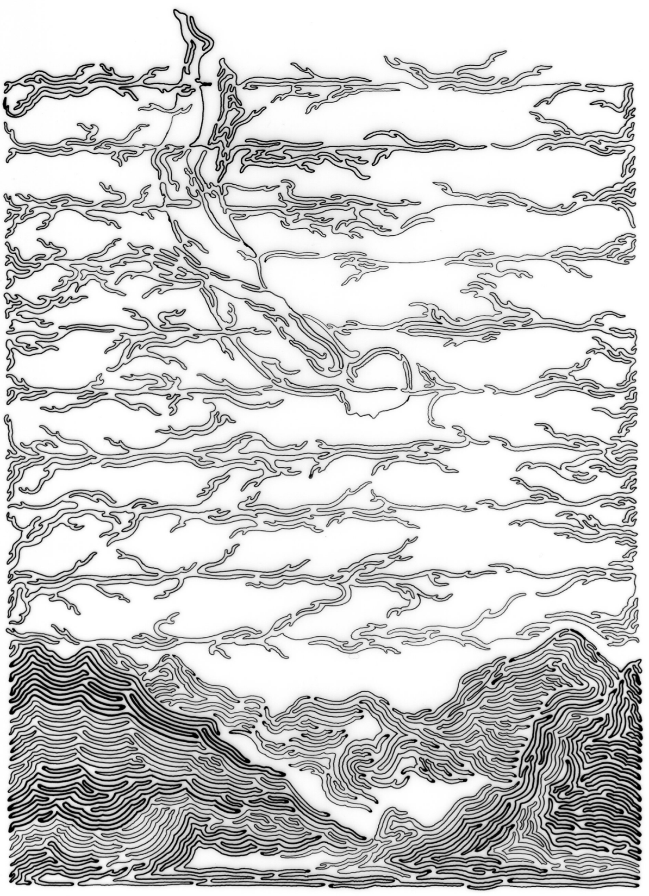

Introduction to Computational Topology
COSC 49.09, Fall 2020
Main
| Schedule |
Homeworks
|
About
Course Schedule
All materials are subject to change based on the actual class interaction and student feedback.
Curves
9/14

When we could be diving for pearls
,
Fiona Ross, 9 3/4” x 6”, 2011
Micron ink on Denril paper
logistics; introductions; planar curves, representations, Jordan curve/polygon theorem [
lecture video
|
scribbles
]
Erickson Chap 1
Lazarus-Mesmay Sec 2.1.1
Reference to Jordan curve theorem:
The Jordan-Schönflies Theorem and the Classification of Surfaces
by Thomassen
Topology
by Munkres, Sec 61 and 63
9/16
winding number, homotopy, invariance; regular homotopy, rotation number, Whitney-Graustein Theorem; Gauss signing, smoothings, Seifert decomposition [
lecture video
|
scribbles
]
Erickson Chap 5
Cool application of regular homotopy (no time):
Mitchell
-
Thurston
hex mesh theorem
Picture-hanging puzzles
by Demaine, Demaine, Minsky, Mitchell, Rivest, and Pătrașcu
Untangling planar curves
(shameless self-promotion)
Reference to simplicial approximation theorem:
Chap 6 of lecture notes by Wilton
(polished by Dexter Chua)
Elements of Algebraic Topology
by Munkres, Sec 14-16
Surfaces
9/21
surfaces, triangulations, polygonal schemata, homeomorphism, classification of surfaces; surface graphs, rotation system, dual graphs, tree-cotree decomposition, Euler's formula [
lecture video
|
scribbles
]
Lazarus-Mesmay Sec 3.1 and 3.2
Comics and fun videos about surfaces:
Topo the World
by Jean-Pierre Petit, translated by John Murphy
Wind and Mr. Ug
by Vi Hart
Conway's ZIP proof
by Franci and Weeks
Erickson Chap 6
Reference to triangulation theorem:
The Jordan-Schönflies Theorem and the Classification of Surfaces
by Thomassen
9/23
tree-cotree decomposition, Euler characteristic, Gauss-Bonnet theorem; mesh generation, Delaunay triangulations, flip algorithm, Bowyer-Watson refinement, Ruppert's algorithm [
lecture video
|
scribbles
]
Erickson Chap 2
Mesh Generation and Geometry Processing in Graphics, Engineering, and Modeling
by Jonathan Shewchuk, Chap 2, 3, and 6.3
Elementary Applied Topology
by Robert Ghrist, Chap 3
Classical Topology and Combinatorial Group Theory
by Stillwell, Chap 1
Mesh Generation and Optimal triangulation
by Bern and Eppstein
Homotopy
9/28
9/30
Optimization
10/5
10/7
Complexes
10/12
10/14
Homology
10/19
10/21
Cohomology
10/26
10/28
Morse theory
11/2
11/4
Advanced applications in CS
11/9
11/11
11/16
last modified on
{kind=link}